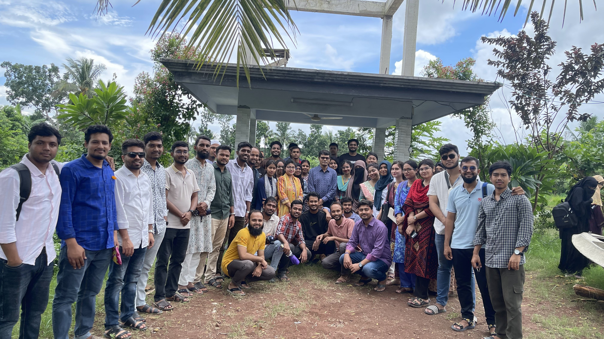
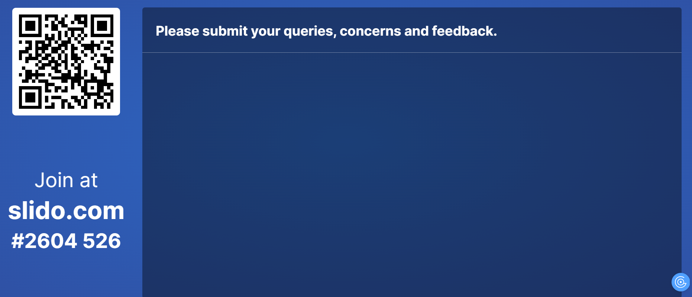
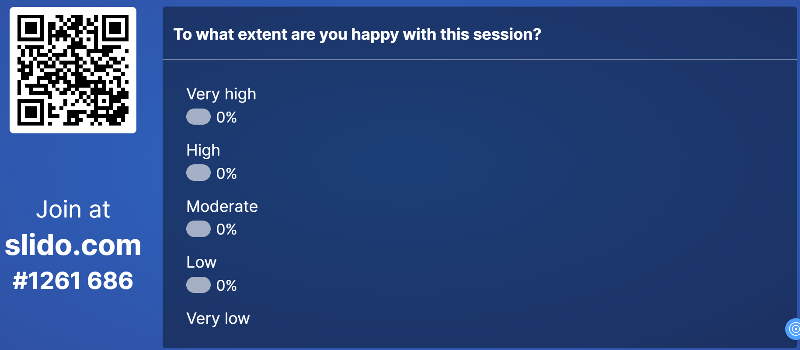

Extension Field Trip 2025
Faculty of Fisheries
Professor Dr. Md. Kamrul Hasan
2025-09-19
Extension Field Trip 2025
- B. Sc. Fisheries (Hons.), Session 2020–2021
- Department of Agricultural Extension and Rural Development
- Patuakhali Science and Technology University
- Dumki, Patuakhali 8660
- Date: 21-23 September 2025
- Place: Dumuria Upazila, Khulna
Outline
- What is extension field trip?
- Why is it done?
- How to do it?
- What are the expectations?
- What are your queries?
Extension Field Trip
- Extension field trip is a part of the course contents of ARD 418 (Extension Education for Fisheries).
- This is a capstone program that introduces students with field level activities of various government offices related to agriculture, fisheries and rural development.
- This out-of-class visit to the rural areas brings practical experiences, which are complementary to the classroom contents.
Learning Outcomes
At the end of the field trip, the participant students will be able to:
- explain the administrative structure of a upazila (sub-district);
- illustrate the organogram of different government departments;
- describe the services mentioned in the citizen charters;
- summarize the objectives of visited projects in the farmers’ field; and
- suggest improvements for fisheries development projects.
Groups and Guides
Stay: Hotel Asia International, Majid Sarani, Khulna
Teacher Guides:
- Prof. Dr. Md. Golam Rabbani Akanda,
- Prof. Dr. md. Kamrul Hasan, and
- Associate Professor Aparajita Badhan
Assistants:
- Mr. Md. Afzal Hossain and
- Mr.Liton Chandra Shil
Preparation
- Tour Approval from university authority
- Receiving funds for accommodation and transport
- Communicating with the hosts (UNO, SUFU, UAO, etc.)
- Take some extra money for meals.
- Take 30-35 A4 size blank sheets of paper for report writing.
- No specific dress code, take a clean bed sheet if needed.
- Hot water arrangement on your own
Food management
- Arrange on your own (hotel or restaurant).
- Teachers will not arrange your meals.
- Drink only safe water.
- Vegetarian: Explore on your own.
Beware of …
- Take extra care for fire hazard and avoid as much as possible.
- Use your own bed sheet for hygiene purpose.
- Take small soap, shampoo and other personal cosmetics.
- Take umbrella, sunglasses, water heater (if needed), medicines.
- Do not overlook contagious diseases.
Emergency Management
- Sick: Immediately inform your guide teacher.
- Send message to your parents in a soft tone.
- Your guide teacher will arrange a shift for you with either your classmate or family members
- Caution: Keep your emergency medicine with you, especially for asthma, allergic reaction, anaphyllaxis.
Schedule 2025
- 20 Sep 2025: travelling to the selected upazila
- 21 Sep 2025: attending the conference of upazila level officers and visiting various upazila level offices
- 22 Sep 2025: visiting various field projects
- 23 Sep 2025: report presentation, certificate receiving and travelling back to the campus
Your attendances may be recorded several times a day.
Important Locations
Starting
20 September 2025, Saturday
- @ 2.30–3.00 pm take the bus at PSTU
- @ 3.50–4.00 pm take the bus at Barishal
- @ 4.15-4.45 pm prayer and short break
- @ 6.00-6.20 pm: Prayer break
- @ 7.15–7.30 pm: Check in at the hotel
Seat Distribution
- Have patience, wait at the dormitory gate.
- Guide teacher will talk to the manager.
- Guide teacher will note the number of rooms with capacity.
- Guide teacher will distribute the keys to each group.
- Do not see the rooms before taking the keys.
- Take the key and go required number of students in a room.
- Take the key …. and repeat the process until the end.
Day 1
- Attend Dumuria Upazial Complex by 9.00 am.
- Follow your teacher guide’s instructions for subsequent activities.
- Attend all the sessions and keep notes for reporting.
- Prepare part of your reports in the evening.
Day 2
Morning session (9.00 am to 1.00 pm):
- Visiting fisheries and agricultural project sites
Afternoon and evening (4.00 pm to 9.00 pm):
- Finalize your report.
Day 3
Morning session (9.00 am to 11.00 am):
- Present your report, receive certificates and provide feedback.
11.00 am:
- Check out from the hotel.
11.30 am to 6.00 pm:
- Return to PSTU, including prayer and lunch breaks
Your Payment
- Total budget (B)
- Common expense (C) = Transport + Accommodation + Banner + Stage + Revenue Stamp
- Cash payment:
P = B - C - Your guide teacher(s) will pay your share during the tour.
Tentative Marks Distribution
- Attendance and punctuality (15%)
- Teamwork and cooperation (15%)
- Ethical values (15%)
- Extra satisfactory performance (5%)
- Presentation of report or requested part (20%)
- Report (30%)
Responsibility
- This is not a pleasure trip.
- Consider adjustment and adaptation to the local situation.
- Accept temporary discomfort in the dormitory.
- Respect local culture and customs.
- Behave well, show pleasant attitude.
- You will only show classmate-like relationships. No other relationships such as spouse, grouping and enemy must not be demonstrated.
Final Touch
- If you want to go home directly at the end of the tour, your guide may talk to your guardians. You will not get bus fare reimbursement.
Nostalgia
- Don’t forget to compile your beautiful photos and memories.
- Make an album selecting the best ones.
- Share those with us for uploading in the PSTU website.
Thank you so much.
Question, Comments, Suggestions
Go to slido.com and enter the code to join
Question, Comments, Suggestions
Go to slido.com and enter the code to join
Are you happy with this session?
